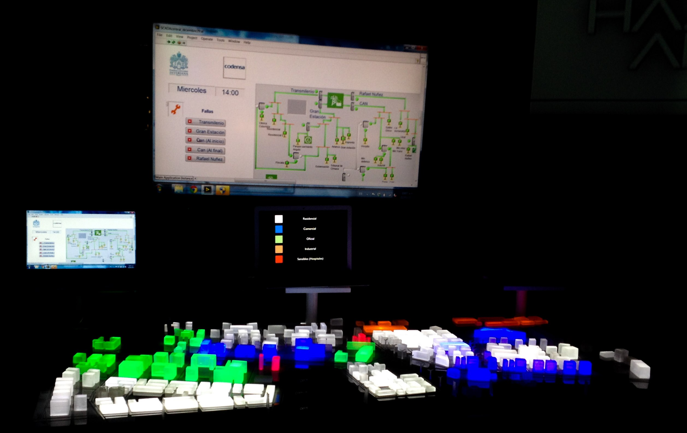

Descripción: El proyecto Silice 3 Hacia una ciudad inteligente fue
realizado por la universidad Javeriana para Colciencias y Codensa. En este
trabajo participe dirigiendo 3 estudiantes con los cuales fabricamos una
maqueta de una ciudad inteligente (Ver figura). La maqueta tiene la capacidad
de mostrar algunas caracteristicas de una red electrica inteligente como son:
Monitoreo en tiempo real del estado de la red y self-healing, generacion distribuida,
infraestructura de medicion avanzada, respuesta de la demanda etc.